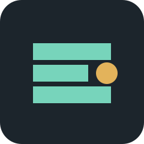

SHppt / P0 RUNTIME
A dependable HTML deck preview
The first slide is rendered by a local daemon and a fixed browser adapter.
OBSERVABLE BY DESIGN
Bridge first, preview second
A valid handshake, a non-empty DOM observation, and a real PNG are one result.
